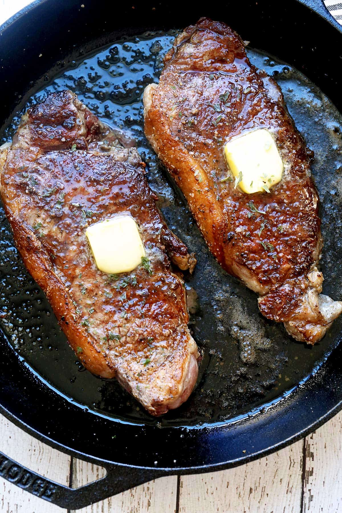

Home
NY Strip Steak

Description
New York strip steak is a tender cut with a marvelous fatty edge and deep,
beefy flavor. For perfect results, sear it in a cast-iron skillet and
finish it in the oven. You'll get a gorgeous crusty exterior and a juicy
interior, just like in a steakhouse.
Ingredients
- NY Strip Steaks
- butter
- salt and pepper
Steps
-
Preheat your oven to 500°F. Heat a well-seasoned cast-iron skillet over
high heat until smoking hot. Meanwhile, sprinkle both sides of the steak
with kosher salt and black pepper.
-
Place the steak in the hot skillet. Cook, without moving, for 2 minutes
on each side, creating a nice crust. Then, cook the fat strip for 30
more seconds.
-
Using oven mitts, transfer the skillet to the hot oven. Roast the steak
to medium rare, 3-4 minutes. For medium, roast for 4-5 minutes. Place
the steak on a plate and loosely cover it with foil. Allow it to rest
for 5 minutes, then top it with butter and serve.